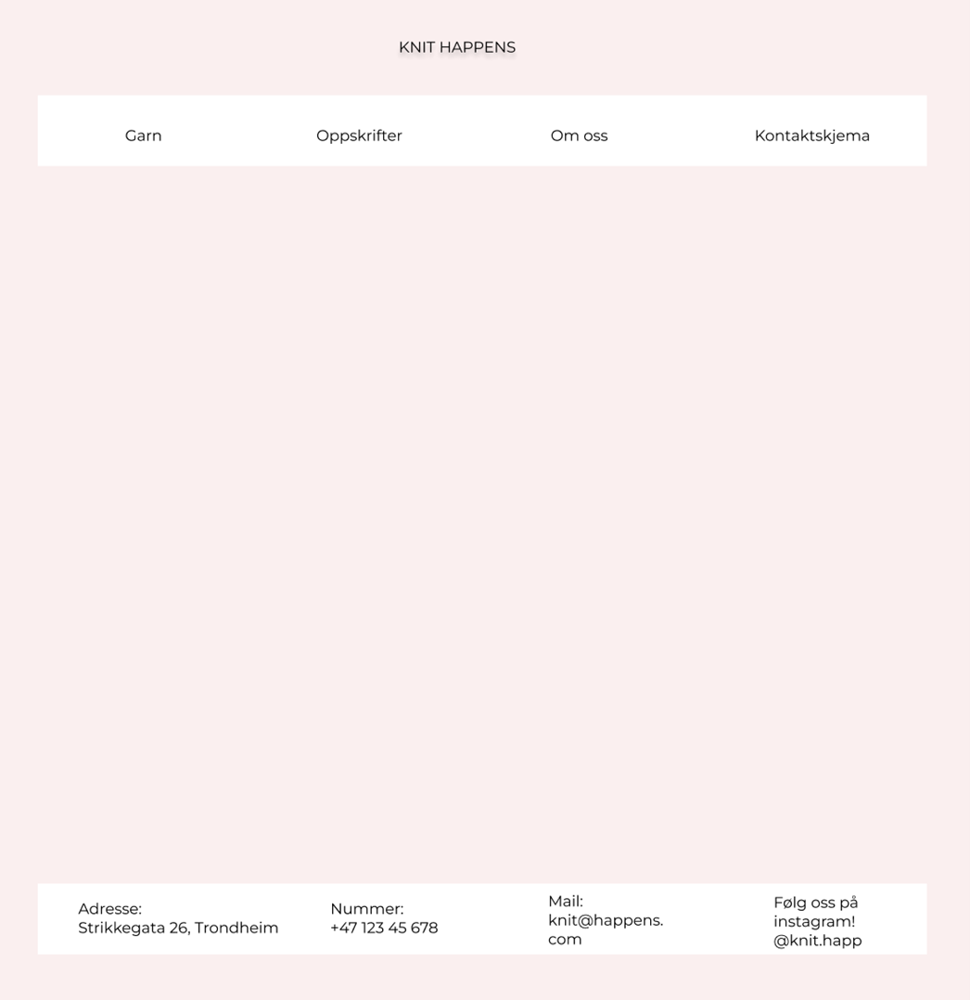
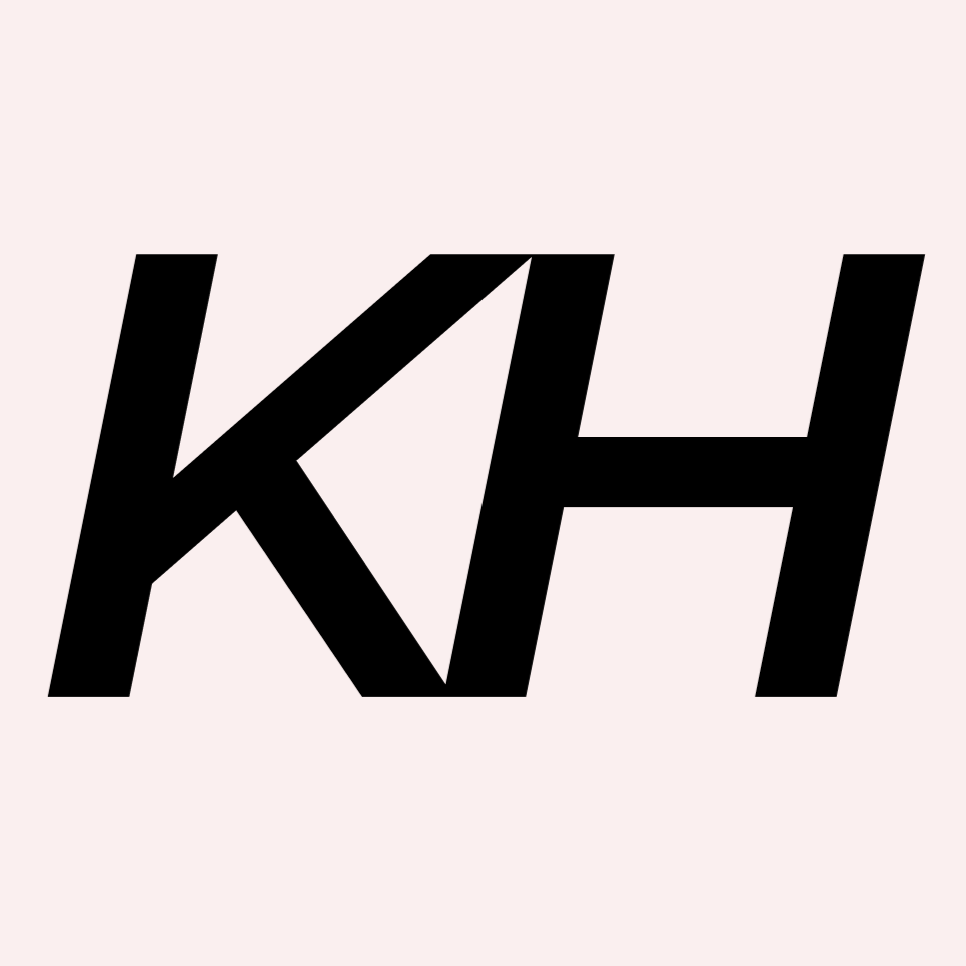
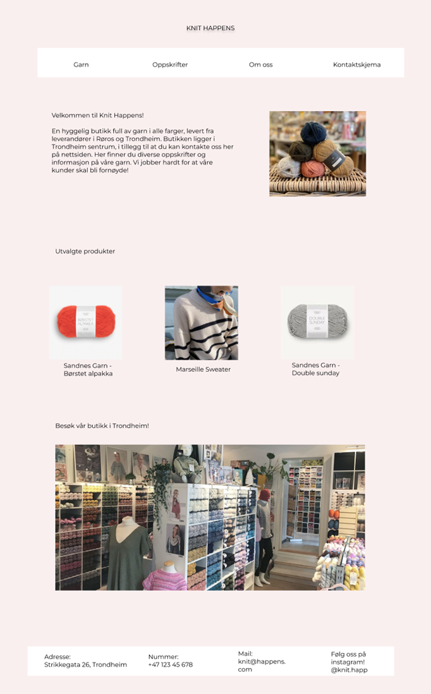
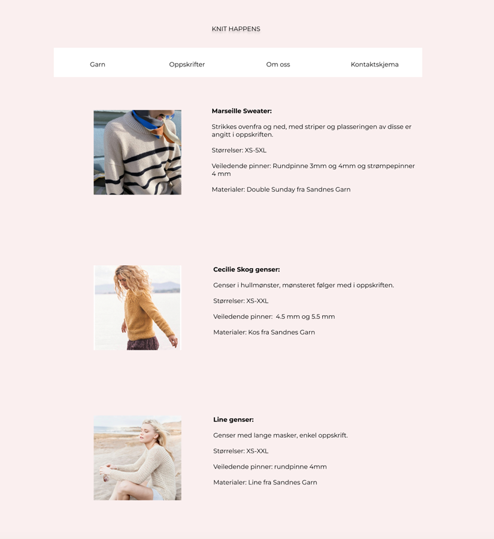
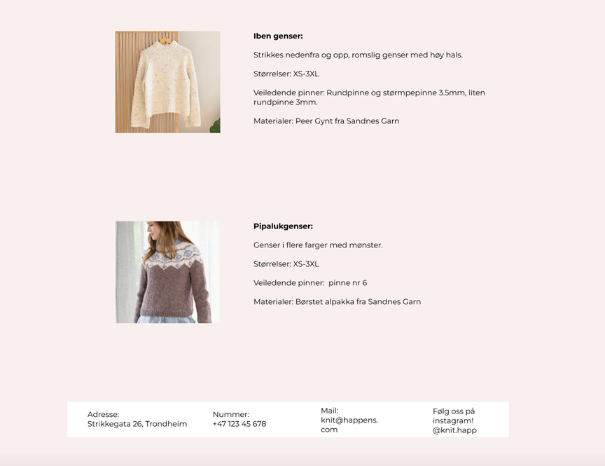
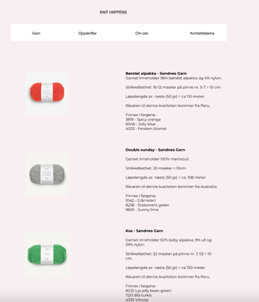
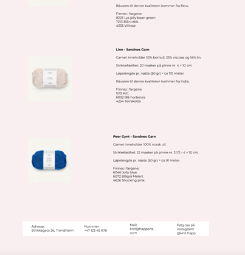
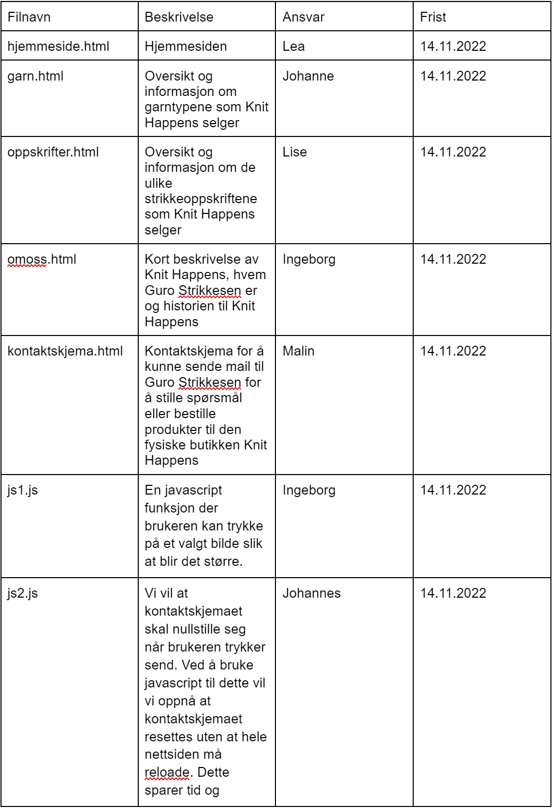
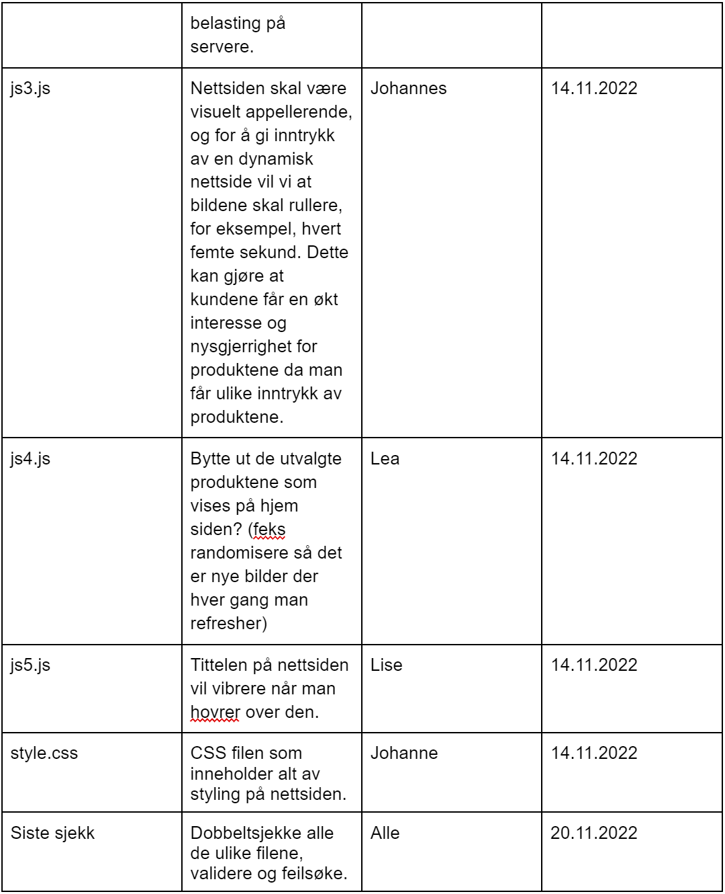

P2 Design
6.10.2022
Johanne, Johannes, Malin, Ingeborg, Lea og Lise
1. Administrative details
Client: Guri Strikkesen, eier av strikkebutikken Knit Happens
Knit Happens
Guri eier strikkebutikken Knit Happens og er lidenskapelig opptatt av strikking. Hun er også opptatt av å spre “strikkeglede” til folket. Guri har drevet en fysisk butikk i Trondheim siden 2015. Nå ønsker hun en nettside for å være mer tilgjengelig for alle, spesielt yngre.
2. Purpose and goals
Sidens mening er å lage en side for butikken Knit Happens der folk kan se på hvilke garn de kan bruke, mønstre de kan strikke og bestille inn til butikken så de kan komme og kjøpe det de har funnet på nettsiden.
3. Audience
Brukere av nettsiden vil være alle med interesse for strikking og garn. Dette kan være folk i alle aldre og kjønn. Primært tenker vi kvinner i alder 18-60.
4. Navigation Structure
Hovedmåten å navigere seg rundt på nettsiden er i navigation-baren øverst på siden. Den linker til 4 andre sider på nettsiden: garn, oppskrifter, om oss og kontaktskjema. Videre kan man trykke på overskriften “knit happens” for å komme til hjem-siden. Bildene av de utvalgte produktene leder også til sidene for de produktene det er bilde av. Vi har valgt denne strukturen siden det gjør nettsiden ryddig og enkel å bruke.
5. Page layout and appearances
Vi har fokusert på et enkelt og rent design hvor hovedfokuset skal være strikking og produktene Knit Happens tilbyr. Målet er å vekke strikkegleden hos brukeren hvor det skal være lett å navigere seg fram til produktene en ønsker å bestille. I menyen øverst på siden vil man umiddelbart få god oversikt over nettsiden og det er intuitivt hva som vil komme opp når man klikker på de ulike alternativene. Guri Strikkesen ønsket om at de som besøker nettsiden enkelt skal kunne ta kontakt med butikken. Dette løste vi gjennom et kontaktskjema inne på siden, som vi har lagt under “Kontaktskjema” i menyen. Vi har troen på at klienten vår, Guri, blir fornøyd med denne løsningen på nettsiden.
Spesifikk styling vi vil ha på alle sidene:
- Font: Helvetica
- Skriftstørrelse: 12
- Tekst: svart
- Bakgrunn: Lys rosa
Linker:
- Ved å trykke på hovedoverskriften(knit happens) vil man bli ført tilbake til hjemmesiden
- Hver av alternativene i hovedmenyen vil linke til sine respektive sider
- Menylinjen vil ligge øverst uavhengig av hvilken side man er inne på. Det samme vil gjelde for bunnteksten.
- Det vil være en ramme rundt menyen, med hvit bakgrunn
- Logoen vil vises som et favicon 
6. Content
Hjemmeside - hjemmeside.html
På hjem-siden til nettsiden vår har vi valgt å ha en introduksjon til butikken og utvalgte varer for at folk som vil bruke nettsiden ikke trenger å lure på hva nettsiden formidler, hva slags butikk nettsiden tilhører eller hva som er butikkens anbefalte varer. Likt som på de andre sidene er det også en navigation-bar og en footer med informasjon om hvordan å kontakte butikken. Vi har valgt å legge med en tekst om butikken, garn og nettsiden som øverste innhold under navigation-baren med mål om å gi en introduksjon til butikken som er lett å finne. I tillegg har vi lagt med bilder av garn samt av butikken lenger nede på siden. Videre har vi tatt et valg om en behagelig og lys rosa bakgrunnsfarge for å gjøre det lett å lese og å se på nettsiden.
Oppskrifter - oppskrifter.html
På denne siden vil det bli presentert 5 ulike strikkeoppskrifter. Det vil være et bilde av hver av typene genser det er oppskrift på. I teksten til hvert bilde vil det stå litt info: alle skal inneholde størrelser oppskriften kan strikkes i, veiledende pinner og hvilke materialer som trengs. Materialer vil være de ulike garntypene som finnes på nettsiden. Hver av strikkeoppskriftene vil ha hvert sitt type garn som materiale. Det vil ikke være mulig å trykke på bildene eller teksten for å få mer informasjon. Derimot vil bildene bli større om man trykker på dem.
 Garn - garn.html
På denne siden blir de ulike garnene som Knit happens selger, presentert. Det vil være et bilde av hver av de ulike garnene. Disse bildene viser kun en av fargene. Så blir alle tre fargene beskrevet i teksten. I teksten til hvert bilde er det også en beskrivelse av innholdet i garnet, strikkefastheten samt løpelengden. Det vil ikke være mulig å klikke på bildene eller teksten for å få mer informasjon. Det er bare en fremvisning av produktene.
 Om oss - omoss.html
På denne siden vil vi representere kunden vår. Her skriver vi litt generelt om butikken før vi går inn på Guri Strikkesen som eier. Følger samme type mal som de andre sidene. Med en frame øverst og nederst. Skal også være mulig å trykke på knit happens helt på toppen og komme tilbake til forsiden. Øverste teksten er skrevet i litt større skrift enn den nederste. Grunnen til dette er at den teksten er “viktigere” enn teksten under. Det er fordi den går mer inn på butikken generelt, i stedet for kun Guri. Bildet er av Guri.
Muligens skrive noe om Guri sine favoritter i tekstboksen om henne.
Kontaktskjema - kontaktskjema.html
På denne siden kan du kontakte oss gjennom et kontaktskjema som blir sendt direkte til Guri Strikkesen sin e-postadresse.
I meldingsboksen kan du spørre om hva som helst. Blant annet kan du sende inn en bestilling på ulike garn som kan holdes av i butikken i Trondheim. Ellers kan du stille spørsmål om de ulike garnene, eller om det er noe annet du lurer på. Ved å trykke på “Send”-knappen sendes skjemaet på e-post til Guri Strikkesen.
7. Minimum Requirements
Vi vil oppfylle minstekravene ved å implementere ulike javascript applikasjoner som beskrevet under:
- En javascript funksjon der brukeren kan trykke på et valgt bilde slik at blir det større. Vi kommer til å ha en del forskjellige produkter på nettsiden, der å forstørre disse forbedrer brukeropplevelsen ettersom man vil få en interaktiv nettside, i tillegg til at man får bedre inntrykk av produktene. For å minimere latens vil miniatyrbildene ha dimensjoner på (200px x 250px), og pop-up vinduet vil være (400px x 500px).
- Vi vil at kontaktskjemaet skal nullstille seg når brukeren trykker send. Ved å bruke javascript til dette vil vi oppnå at kontaktskjemaet resettes uten at hele nettsiden må reloade. Dette sparer tid og belasting på servere.
- Nettsiden skal være visuelt appellerende, og for å gi inntrykk av en dynamisk nettside vil vi at bildene skal rullere, for eksempel, hvert femte sekund. Dette kan gjøre at kundene får en økt interesse og nysgjerrighet for produktene da man får ulike inntrykk av produktene.
- Bytte ut de utvalgte produktene som vises på hjem-siden (feks randomisere så det er nye bilder der hver gang man refresher)
- Tittelen på nettsiden vil vibrere når man hovrer over den.
8. Plan
Liste med filer og mapper:- hjemmeside.html
- garn.html
- oppskrifter.html
- omoss.html
- kontaktskjema.html
- img/
- favicon.png
- garn.png
- garn2.png
- hjemmeside.png
- kontaktskjema.png
- layout.png
- omoss.png
- oppskrifter.png
- oppskrifter2.png
- Skjema1.png
- Skjema2.png
- Scripts/
- JS1.js
- JS2.js
- JS3.js
- JS4.js
- JS5.js
- style.css
 